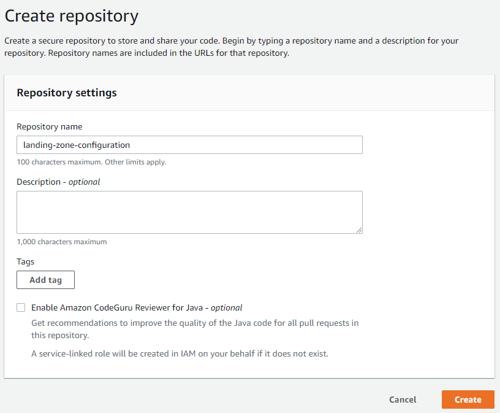
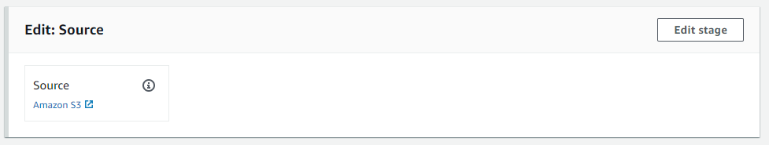
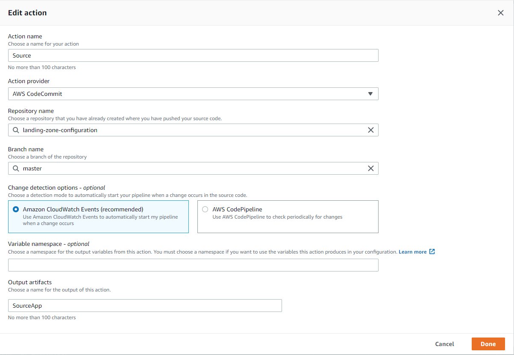
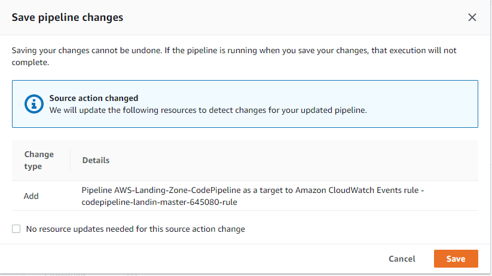

Landing Zone CodePipeline 默认使用一个启用了版本的 S3 bucket 作为代码来源: 当有新的配置文件 aws-landing-zone-configuration.zip 上传时, 触发 CodePipeline. 然而使用 versioned bucket 作为版本控制显然算不上最佳实践. 这里将修改 Landing Zone Codepipeline 使用 CodeCommit repo 作为代码来源. 这样就可以通过 git 来管理组织下所有 AWS 账号的配置基线.
进一步, 企业一般都有自己的代码管理平台 (bitbucket/gitlab/github), 并不见得愿意单单为了管理 Landing Zone 的配置而引入额外的 CodeCommit 代码仓库的维护成本. 实际上可以利用现有代码平台来保存 Landing Zone 配置, 其基本原理是做仓库镜像: 利用 CI 工具将特定分支的更新自动推送到 CodeCommit, 进而触发 CodePipeline.
配置 CodeCommit
创建 CodeCommit 代码仓库
到 Developer Tools, CodeCommit 下创建一个名为 landing-zone-configuration 的代码仓库 
创建 IAM Policy 和服务账号
到 IAM 下创建自定义 Policy: LandingZoneCodeCommitRepoAccess 1
2
3
4
5
6
7
8
9
10
11
12
13
14
15
16
17
18
19
20
21
22
23
24
25
26{
"Version": "2012-10-17",
"Statement": [
{
"Effect": "Allow",
"Action": [
"codecommit:BatchGet*",
"codecommit:Create*",
"codecommit:DeleteBranch",
"codecommit:Get*",
"codecommit:List*",
"codecommit:Describe*",
"codecommit:Put*",
"codecommit:Post*",
"codecommit:Merge*",
"codecommit:Test*",
"codecommit:Update*",
"codecommit:GitPull",
"codecommit:GitPush"
],
"Resource": [
"arn:aws:codecommit:<region>:<accountid>:landing-zone-configuration"
]
}
]
}
我们并不会直接使用这个账户来修改 Landing Zone 配置. 这个账号仅仅用于同步私有代码仓库到 CodeCommit.
使用 CodeCommit 作为 Landing Zone Pipeline 构建源
进入 CodePipeline, 编辑 AWS-Landing-Zone-CodePipeline. Edit Source, Edit stage 
编辑原有的 Source
- Action provider: AWS CodeCommit
- Repository name: landing-zone-configuration
- Branch name: master
- Change detection options: Amazon Cloudwatch Events
- Output artifacts: SourceApp

保存退出. 此时会提示将自动添加 AWS Cloudwatch Events rule. 这里我们需要 Events rule 来跟踪 CodeCommit 的变化进而触发 CodePipeline, 因此保持 "No resource updates needed for this source action change" 为默认的不勾选状态, 让 AWS 自动创建 Cloudwatch Events rule.

如果感兴趣可以到 Cloudwatch Events 下查看自动产生的规则.
使用私有代码仓库保存 Landing Zone 配置
下面是使用 gitlab CI 的例子: Landing Zone 配置保存在企业内部的 gitlab 代码仓库中, 当 master 分支发生变更时触发 gitlab CI, 将代码库镜像到 AWS CodeCommit, 进而触发 Landing Zone CodePipeline.
1 | image: rtcamp/gitlab-aws-codecommit-mirror |
这里用到的几个 CI 变量:
- USERNAME: 就是前面配置的 IAM 服务账号 landing-zone-repo-mirror 下 HTTPS Git credentials for AWS CodeCommit 的用户名
- DEST_REPO: AWS CodeCommit 代码库位置, 例如 git-codecommit.us-west-2.amazonaws.com/v1/repos/landing-zone-configuration
- SECRET: landing-zone-repo-mirror 下 HTTPS Git credentials for AWS CodeCommit 的密码. 注意特殊字符转义
- SOURCE_REPO: 内部代码库位置, 例如 gitlab.svc.vopsdev.com/devinfra/landing-zone-configuration.git
- TOKEN_NAME, TOKEN_VALUE: 这里使用 deploy token 来获取私有代码库